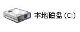
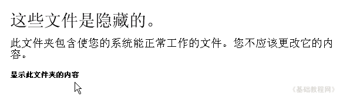
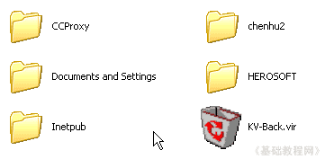
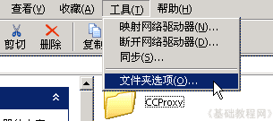
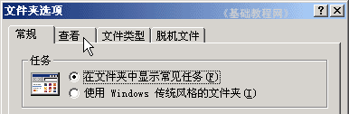
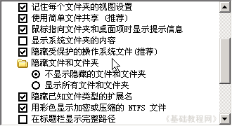
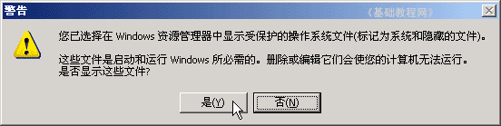
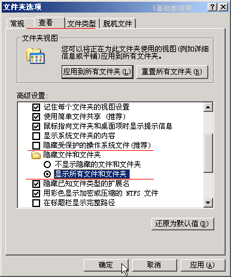
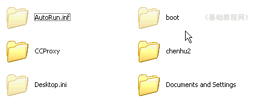
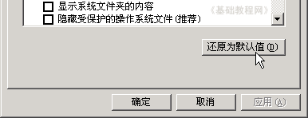

电脑操作基础
三十、显示隐藏文件 返回
出于安全考虑，重要的系统文件，会隐藏起来以免用户误删除，有些病毒也会把自己隐藏起来，怎样查看隐藏文件呢?下面我们来看一个练习；
1、打开我的电脑
1）在桌面上打开“我的电脑”，打开“C:盘”，C:盘一般是系统盘，出来一个提示，里面安装有Windows等操作系统；

2）出来的提示里点击“显示此文件夹内容”，进入C:盘的文件夹；

3）里面的文件都是正常，也就是都可以很清楚的看到；

2、显示所有文件
1）点菜单“工具－文件夹选项”进入文件夹选项面板；

2）在出来的面板中，在上边选择“查看”标签，进入查看面板；

3）拖动右边的滚动条，到中间的位置，找到“隐藏受保护的操作系统文件(推荐)”，
它下面是“隐藏文件和文件夹”；

4）点一下，去掉“隐藏受保护..”前面的勾，出来一个警告提示，选择“是”；

5）再在下面选中“显示所有文件和文件夹”，点一下前面的圆按钮；

6）点“确定”按钮以后，C:盘的文件夹里，就出来许多灰色的文件，这些就是原来隐藏的文件；

7）改回去的方法是：在前面的“查看”面板下边，点击“还原为默认值”，即可恢复到原来的状态；

本节学习了在WinXP中显示隐藏文件的基本方法，如果你成功地完成了练习，请继续学习下一课内容；
本教程由86团学校TeliuTe制作|著作权所有
基础教程网：http://teliute.org/
美丽的校园……
转载和引用本站内容，请保留版权信息和本站链接。